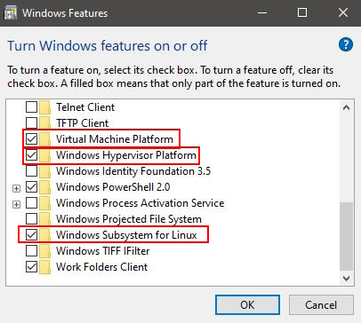
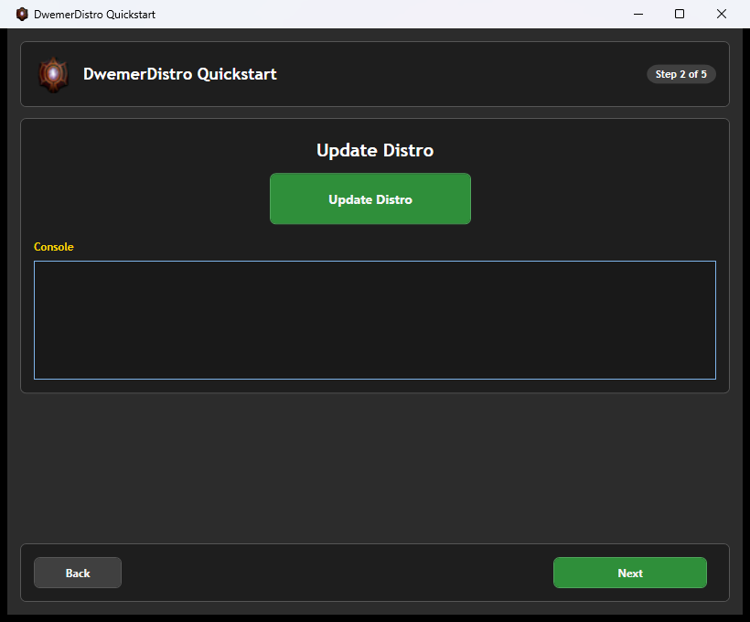
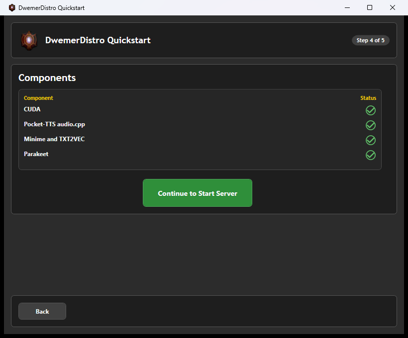

Installation
Set up the LORKHAN beta separately from your existing Morrowind and OpenMW installations.
Requirements
- Windows x64: This guide follows the packaged Windows beta.
- Morrowind: A legally owned installation and its Data Files folder. Game data is not included.
- Matching client: The LORKHAN OpenMW build and Lua files supplied together in the beta ZIP. Stock OpenMW alone is not sufficient.
- Server: DwemerDistro with LorkhanServer installed, plus your chosen AI and speech services.
- Runtime: Microsoft Visual C++ 2015–2022 x64 Redistributable.
Do not install Skyrim SKSE, SkyUI, MWSE or MGE XE as LORKHAN requirements. Other mods must be compatible with the supplied OpenMW build.
Get the beta
The 0.5.0 beta package is named LORKHAN 0.5.0 BETA.zip. Check the Dwemer Dynamics Discord for beta availability and download instructions. The source repository is not a substitute for the compiled beta.
Use the matching package instructions if a newer beta is announced. Do not combine an older executable with newer Lua files.
Installing DwemerDistro
DwemerDistro runs the server and local AI services. The LORKHAN game package is a separate download. Installing one does not install the other.
- Check that hardware virtualization is enabled in your BIOS/UEFI. If Windows reports that virtualization is unavailable, resolve that before installing Distro.
- Open Turn Windows features on or off. Ensure Windows Subsystem for Linux and Virtual Machine Platform are enabled, then restart if requested. Follow the installer’s requirements for your Windows edition.
- Download the current DwemerDistro installer from the official distribution link. Run it and complete its setup, keeping the desktop shortcut if you want one.
- Open DwemerDistro from that shortcut. If it is already installed, update it rather than installing a second copy.
Microsoft’s WSL installation guide explains Windows prerequisites and restarting after setup.

The screenshot is shared with the CHIM guide; the Windows prerequisite is the same. The game mod selected later must be LORKHAN.
Set Up LORKHAN in DwemerDistro
- During launcher Quickstart, choose Update Distro and wait for completion.
- On the mod selection step, select LORKHAN and choose Install Selected Mods. Do not select CHIM unless you also want the Skyrim server.
- Wait for installation to finish before continuing to the component checks.
- Start the server, select LORKHAN on the Mods page and click LORKHAN Webpage.

For an existing installation, use the LORKHAN card’s install/update controls instead of repeating the whole installer. LORKHAN’s beta server channel is Dev. Update the launcher if its Mods page has no LORKHAN card.

Which components do I need?
- Language model: Start with a hosted provider or a working local model. You do not need to download a large local model just to try LORKHAN.
- PocketTTS: The initial local speech choice. Install the available runtime appropriate for your hardware.
- Parakeet: The initial microphone transcription choice. It must be installed and running if selected.
- Memory services: If you enable vector-based memory, install and start its selected embedding service too. A working chat model does not provide embeddings automatically.
Follow the component installer’s account/model-access instructions. Do not share access tokens in screenshots or support logs. Start with one voice service; installing every alternative makes troubleshooting harder.
LORKHAN Web Quickstart
- Open Quickstart from the LorkhanServer menu.
- Enter your chosen provider credentials. Use your own account and check its available credit or quota.
- Select the TTS and STT services you installed, or choose hosted alternatives.
- Review the model choices, save the setup, and return after launching the game to check that your player has been detected.
Your player name comes from the game. Do not type a race or class into a name field to work around a missing game connection. If an installation-specific settings page asks you to connect OpenMW first, finish the client setup below, load your game, then reopen it.
To run your own language model, use the launcher's LLM Studio component. Follow the Local LLM Guide to download, load, test, and connect it inside DwemerDistro.
Quickstart is the starting point. Use LLM services for another provider, TTS for voices, and STT for microphone setup. Do not change advanced prompt formatting to fix an invalid API key.
2. Extract and create a profile
Extract the ZIP into a new versioned folder. Do not overwrite stock OpenMW or another beta. Open PowerShell in the extracted package folder and run this command, replacing both example paths:
powershell.exe -NoProfile -ExecutionPolicy Bypass -File .\config\Setup-Profile.ps1 -GameData 'D:\Games\Morrowind\Data Files' -ProfileRoot 'D:\LorkhanProfiles\Beta-0.5.0'The destination profile must not already exist. The script reads the local server pairing key without displaying it and creates a private client configuration. It does not copy your game data or alter stock OpenMW saves.
The default proxy port is 7514. The setup script accepts -Distro for a differently named DwemerDistro WSL instance and -ProxyPort for a different proxy port.
What the Setup Script Creates
openmw.cfgselects your game data, installed masters and LORKHAN scripts.lorkhan-client.confholds the private server pairing configuration. Never publish it.Play-LORKHAN.cmdlaunches the matching executable through the new profile.AIDataholds client-generated data such as the speech cache.
Use an existing Morrowind Data Files folder containing Morrowind.esm. Tribunal and Bloodmoon are added when their masters are present. Choose a new profile path: even an existing empty directory is rejected to protect existing profiles.
If setup fails, read the PowerShell error before retrying. Do not delete your normal saves. A missing executable usually means you ran the script outside the extracted runtime package; a missing master means GameData points at the wrong folder.
3. Launch and test
- Leave DwemerDistro and your selected local services running.
- Run
Play-LORKHAN.cmdinside the new profile folder. - Open Options → Scripts → LORKHAN and check the Text Chat and Interact binding.
- Look at a nearby NPC, open the interaction menu and send a short typed message.
- Once text works, test NPC speech and then microphone input.
Settings, saves and audio cache stay in the separate profile. For this beta, add other mods through that profile’s openmw.cfg. Avoid editing a different profile with the stock launcher.
Update safely
Back up your profile and server data first. Extract a new beta beside the old one, then follow its package instructions to update the profile launch path. Keep the executable and Lua files from the same package.
Deleting the extracted program folder does not require deleting your profile or Morrowind data. See Logs and Debugging if the first conversation fails.